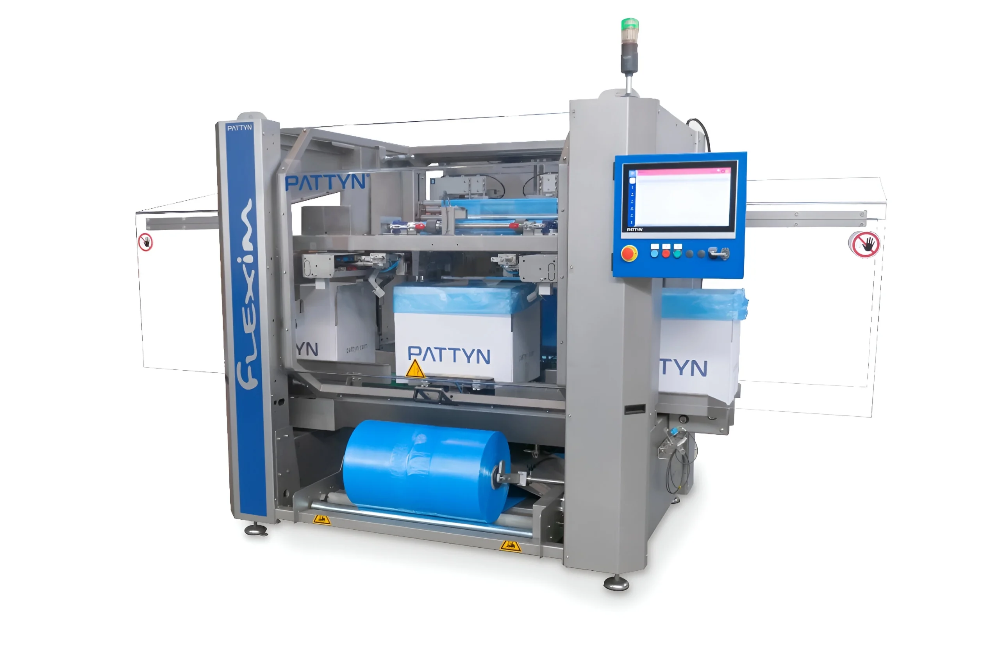

Automatyczne wkładanie worka do kartonu
do 20/min
Worek formowany na maszynie jest od razu wkładany do kartonu — bez ręcznego rozkładania worków, w tempie linii bag-in-box.
Nowoczesna maszyna do wkładania worków to zaawansowane rozwiązanie przeznaczone do automatycznego formowania worka z rękawa foliowego oraz jego precyzyjnego umieszczania wewnątrz kartonu. Takie urządzenie do wkładania worków znacząco usprawnia proces pakowania, eliminując pracę ręczną, zwiększając wydajność oraz zapewniając powtarzalną jakość przygotowania opakowań.
Nasza wykładarka worków automatycznie rozwija rękaw foliowy, wykonuje zgrzew, odcina worek do wymaganej długości, a następnie otwiera go i umieszcza w kartonie. Dzięki temu proces wykładania workiem oraz wyścielania workiem odbywa się w pełni automatycznie, higienicznie i bez udziału operatora. Urządzenie może pracować z kartonami o różnych wymiarach oraz z workami wykonanymi z folii PE.

Wykładarka worków · formowanie worka z rolki · wkładanie do kartonu
Wartości orientacyjne, zależne od formatu i produktu — dane Pattyn.
01 Problem
Przy ręcznym pakowaniu i pracy na gotowych workach koszt rośnie w trzech miejscach: w cenie folii, w czasie przezbrojeń oraz w magazynie wielu wymiarów worków pod różne kartony. Maszyna formująca worek z rolki i wkładająca go do kartonu — wykładarka worków — eliminuje te ograniczenia.
Linia ręczna lub półautomatyczna wymaga ciągłej obecności personelu produkcyjnego
Płacisz za gotowy worek o wielu wymiarach (wytworzenie, spakowanie i dostawę) zamiast za jedną macierzystą rolkę folii
Inny karton często znaczy inny worek w magazynie — zapas rośnie. Nawet karton o tej samej podstawie a innej wysokości wymaga nowego wymiaru worka co skutkuje kolejnym indeksem magazynowym.
02 Sposób działania
Od rolki folii do kartonu z produktem luzem — konfekcjonowanie worka na wymiar, wkładanie do opakowania zbiorczego i wywinięcie mankietu na jednej linii, bez magazynu gotowych worków.
03 Korzyści
do 20/min
Worek formowany na maszynie jest od razu wkładany do kartonu — bez ręcznego rozkładania worków, w tempie linii bag-in-box.
do −30%
Płacisz za rękaw foliowy na rolce, a nie za gotowy worek skonfekcjonowany na wymiar — niższy koszt jednostkowy opakowania.
1 wymiar rolki
Worek na wymiar z tej samej rolki pasuje do wielu wysokości kartonu — mniejszy magazyn folii, bez dziesiątek indeksów gotowych worków.
04 Porównanie
Worek formowany na maszynie (MTM, z rolki) czy gotowy worek — porównujemy koszt folii, magazyn i elastyczność formatów kartonu.
| Kryterium | Worek na wymiar (z rolki) | Gotowy worek (Pre-made) |
|---|---|---|
| Koszt folii | Rolka macierzysta do 60 kg zawierająca do kilku tysięcy worków | Worek już uformowany – koszt konfekcjonowania worków |
| Magazyn / SKU | Jedna szerokość rolki dla wielu rozmiarów (długości) worków | Osobny worek (SKU) na każdy format kartonu |
| Elastyczność rozmiarów | Długość worka ustawiasz w maszynie — nowy karton bez czekania na dostawę worka | Zamówienie i dostawa nowego rozmiaru worka |
| Dopasowanie / higiena | Minimalna ilość folii i luzu – worek otwierany tuż przed włożeniem do opakowania | Standardowe wymiary – często więcej folii |
| Kiedy ma zastosowanie | Przy większych wolumenach, standaryzacji podstaw kartonu | Bardzo małe wolumeny, dużo różnych podstaw kartonów |
05 Linia
Wybierz etap i zobacz, co się w nim dzieje oraz co możemy zaproponować do Twojej linii.
Karton zbiorczy jest formowany i podklejany taśmą lub klejem — to pierwszy etap w Twojej linii.
Podłączamy urządzenie do formowania kartonu CE-31-P, które podkleja spód za pomocą taśmy samoprzylepnej lub za pomocą kleju (hot-melt). Sposób zaklejania zależy od wybranego modelu maszyny.
06 Branże
Wykładarka worków — maszyna do wkładania worków do kartonu — sprawdza się tam, gdzie produkt luzem trafia do opakowania zbiorczego: kartonu, skrzynki lub tacy. System bag-in-box z worem na wymiar z rolki obsługuje żywność, chemię i wiele innych branż — poniżej przykłady zastosowań.
07 Filmy pokazowe
Zobacz wykładarkę worków w akcji — konfekcjonowanie worka z rolki folii i automatyczne wkładanie do kartonu na linii.
08 Kontakt
Napisz, co pakujesz, jaki masz karton i ile opakowań na minutę potrzebujesz — wrócimy z propozycją wykładarki worków, modelu bagmaker inserter i układu linii bag-in-box.
Bezpośredni kontakt
Spolex Sp. z o.o.
ul. Rzemieślnicza 13
05-082 Blizne Łaszczyńskiego, Polska